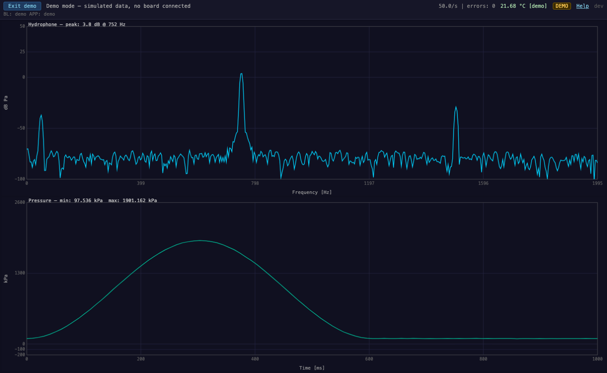

DWS Sensor Board Tester
Plug a DWS sensor board into USB and check it from your browser. The tester shows the hydrophone spectrum, the pressure trace, the temperature and the firmware versions live. There's nothing to install.

What it checks
Hydrophone
A 1024-point FFT of the hydrophone signal (sampled at 3989 Hz, DC removed, Blackman window), plotted in dB re 1 Pa from 0 to 1995 Hz. The label shows the peak level and its frequency.
Pressure
The last second of pressure readings in kPa, scrolling, with the minimum and maximum in the window.
Temperature & status
The board temperature in °C and the status string the sensor firmware reports.
Firmware & link health
The bootloader and app versions, read at connect. Also the poll rate and the number of frames that failed to parse.
How to use
- Connect the sensor board to the computer over USB.
- Open the tester in Chrome or Edge, then click Connect.
- Choose the board's serial port in the browser's pop-up and click Connect.
- The tester talks to the bootloader, reads the firmware versions and starts the sensor app. This takes a few seconds.
- When the status says Connected, the plots update live. Click Disconnect to release the port.
Requirements
A desktop browser with the Web Serial API: Chrome 89+ or Edge 89+ on Windows, macOS or Linux.
The tester connects at 1,000,000 baud, 8N1, with no flow control. All processing happens in your browser, and no data leaves your computer.
Running offline
The download is a single HTML file (about 80 KB) that contains the whole tester. It doesn't need an internet connection, a web server or an install.
- Download
dws-sensor-board-tester.htmland save it anywhere, such as the test bench's desktop. - Open it in Chrome or Edge: double-click it, or drag it onto a browser window. If your default browser is something else, right-click the file and choose Open with.
- Use it as described above. To check which version you have, look at the top-right corner of the tester.
Troubleshooting
- The Connect button is greyed out, or there's a "Web Serial not supported" warning
- The browser doesn't support Web Serial. Use desktop Chrome or Edge.
- The board's port isn't in the list
- Check the USB cable (some cables only carry power) and that the board is powered. On Windows, check that the port appears in Device Manager.
- "Connect failed: Failed to open serial port"
- Another program, such as a terminal, or another browser tab has the port open. Close it and try again.
- "Boot loader not responding."
- The board didn't answer within about 6 seconds. Reset or power-cycle the board, then click Disconnect and Connect again.
- The error count keeps rising
- Some frames from the board aren't decoding. A few errors at connect are normal. If the count keeps rising, check the cable and the board's firmware version.